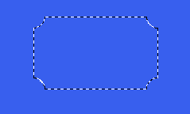
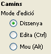
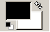
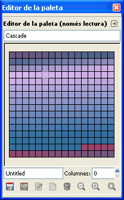

Tractament de la imatge
Podeu obtenir imatges de diverses fonts: fent fotografies amb una càmera digital, fent dibuixos amb l’ordinador, amb les imatges descarregades d’Internet, digitalitzant-les amb un escàner o capturant el que es veu a la pantalla de l’ordinador.
Sigui quin sigui l’origen de la imatge, el GIMP (GNU Image Manipulation Program), programari de creació i retoc d’imatges, us permetrà realitzar les accions bàsiques amb les quals es familiaritza un usuari/ària que s’està iniciant: seleccionar amb diferents eines, pintar, canviar les mides, inserir text a una imatge, treballar amb capes…
Descàrrega i instal·lació del GIMP
Per descarregar-vos el GIMP, podeu anar a: http://the-gimp.softonic.com/
Trobareu versions per a Windows, per a Linux i per a Mac.
Un cop descarregat el fitxer només caldrà executar-lo. S’obrirà el wizard o assistent d’instal·lació i haureu d’anar seguint les instruccions.
La interfície del GIMP
Al GIMP es poden distingir dues finestres essencials: la finestra principal i la finestra de la imatge. Un altra finestra molt útil és la finestra de diàlegs encastables (figura).
La finestra principal
La finestra principal incorpora:
- La barra del títol: fent un clic sobre la icona de la mascota del GIMP, s’obre un desplegable amb les opcions Restaurar, Moure, Mida, Minimitzar, Maximitzar i Tancar. Fent un doble clic sobre la icona de la mascota o fent un clic sobre la X, tanqueu el programa.
- La barra del menú: des d’Edita podeu accedir, entre d’altres, al quadre Preferències (figura) per configurar les opcions del GIMP.
- La caixa d’eines: fent un clic sobre cada opció, s’obre la finestra corresponent. A sota de la caixa d’eines s’ubiquen els controls per a cada eina que activeu. Arrossegant la barra superior (on consta el nom de l’eina) del quadre de control d’una eina, feu que el quadre se separi de la finestra i es mostri a una finestra nova. Per restablir la ubicació per defecte, aneu a Eines\Preferències\Gestió de finestres i premeu el botó Recupera les posicions per defecte de les finestres.
A la figura, figura, figura i figura teniu una descripció de les eines disponibles. Quan situeu el ratolí a sobre d’una eina n’apareixen el nom i la descripció i, entre parèntesi, la tecla o combinació de tecles per activar-les des del teclat.
La finestra de la imatge
Quan s’obre o es crea una imatge nova, la finestra principal és substituïda per la finestra de la imatge, però només canvia la barra del títol.
- La barra del títol mostra una icona, que és la còpia reduïda de la imatge continguda a la finestra, el nom de la imatge, informació sobre el tipus d’imatge (RGB, indexada o escala de grisos), el nombre de capes i les mides (amplada x alçada) de la imatge. Clicant sobre la imatge reduïda, es despleguen les opcions Restaurar, Moure, Mida, Minimitzar, Maximitzar i Tancar.
- La barra del menú conté els menús: Fitxer, Edita, Selecciona, Visualitza, Imatge, Capes, Colors, Eines, Filtres, Finestres i Ajuda. Clicant amb el botó dret sobre l’àrea de la imatge, es desplega un menú contextual amb les mateixes opcions.
- Els regles verticals i horitzontals amb les guies corresponents que podeu arrossegar amb el punter fins a situar-les al lloc escollit dins la imatge. Les guies actuen com un imant que atreu els elements que moveu per la imatge. Per treure una guia, activeu l’eina moure. Situeu el punter sobre la guia fins que es mostri una mà amb el dit índex estirat (figura) i, a continuació, arrossegueu la guia fora de la imatge.
- Atenció: Per poder treure la guia, vigileu que al quadre de control de l’eina moure tingueu activada l’opció Selecciona una capa o guia.
- El triangle petit situat a la part esquerra del regle horitzontal desplega un menú amb les mateixes opcions que trobeu a la barra del menú i al menú contextual que es desplega prement sobre la imatge amb el botó dret del ratolí.
- Si voleu separar aquest menú del triangle i del menú contextual per obrir-lo a una finestra nova, només cal fer un clic sobre les línies discontínues.
- Clicant de nou sobre el triangle (figura), el menú es tornarà a enganxar. Prement amb el botó dret del ratolí, tornarà a mostrar-se en forma de menú contextual.
- La lupa està situada a la part dreta del regle horitzontal. Si la lupa està activa, automàticament, quan maximitzeu la finestra, augmenta el zoom i, quan la minimitzeu, es redueix.
- A la part inferior esquerra, es troba el botó Commuta màscara ràpida.
- A la part inferior dreta, veureu el botó Moure. Fent un clic, es mostra la imatge activa amb mides reduïdes. Quan la finestra és més petita que la imatge, i per tant, la imatge no es pot veure sencera, en lloc de moure les barres de desplaçament vertical i horitzontal, podeu seleccionar la zona de la imatge que voleu que es mostri desplaçant el rectangle que representa el marc de la finestra.
- A la barra d’estat podeu escollir el percentatge de zoom que necessiteu per visualitzar la imatge.
- També hi trobeu informació sobre el pes de la imatge, però no es refereix al pes que tindrà un cop desada, sinó al pes o memòria ocupada que genera el procés de treball.
- Els diàlegs encastables, que podeu trobar en el menú Finestres, permeten controlar moltes opcions i possibilitats del GIMP. Podeu obrir un diàleg sol, o bé un grup de diàlegs.Un grup de diàlegs pot estar format, per exemple, per Capes, Canals i Camins. Per obrir un diàleg, per exemple el de Capes (figura), obriu el menú Finestres i desplegueu els Diàlegs encastables. Escolliu Capes.
- Per afegir a un diàleg o a un grup de diàlegs una altra pestanya per incorporar-hi un diàleg nou, premeu el triangle que mira cap a l’esquerra, seleccioneu l’opció Afegeix una pestanya (figura) i escolliu un diàleg de la llista desplegada. Cada diàleg s’activa prement sobre la pestanya corresponent.
- Quan treballeu amb el GIMP, és molt aconsellable tenir el diàleg de capes actiu i visible (figura).
Atenció!: A vegades us podeu trobar que una eina no us respongui i, per tant, no pugueu fer amb ella l’acció que us proposeu. Aleshores, caldrà mirar:
- Si teniu seleccionada la capa sobre la qual voleu actuar.
- Si teniu una Selecció Flotant. Quan enganxeu o moveu una selecció, el GIMP ho fa en una selecció flotant o capa temporal. Per continuar treballant, cal ancorar la selecció flotant a la capa de sota, o bé situar-la en una capa nova. El diàleg de capes us permet ancorar la selecció flotant (ubicar-la a la capa de sota), o bé situar-la en una capa nova.
- Si no es tracta de res de tot això, caldrà mirar si les opcions del control de l’eina estan configurades per a l’acció que voleu fer.
Crear, obrir i desar una imatge
Amb el Gimp podeu crear imatges noves. També podeu obrir una imatge o una fotografia ja existent, fer els retocs que vulgueu i, finalment, desar-la. Les imatges es poden desar en diferents formats. És important que escolliu el format més adequat en funció de les vostres necessitats.
Obrir una imatge
El GIMP pot obrir molts formats de fitxer: GIF, JPG, ICO, PSP, PDF, PNG, TIF, BMP, PSD… L’extensió pròpia del GIMP és XCF.
Per obrir una imatge ja existent, aneu a la finestra principal, al menú Fitxer\Obre. Es mostra la finestra Obre una imatge (figura).
- A la columna de l’esquerra, indiqueu, fent doble clic, a quina unitat anireu a buscar la imatge…
- Amb els botons + Afegeix i – Suprimeix podeu afegir o treure dreceres per accedir directament a unes carpetes en concret.
- A la columna del mig, cerqueu la carpeta i seleccioneu la imatge. Podeu retornar a les carpetes que estan a un nivell superior clicant als botons que es troben a la zona superior d’aquesta columna i que indiquen el camí on esteu.
- A la columna de la dreta, obtindreu una previsualització a escala reduïda de la imatge seleccionada, amb informació sobre el nom de la imatge, l’extensió, el pes i les mides.
- Desplegant l’opció Totes les imatges, podeu crear un filtre en què s’indiqui que només es mostrin a la columna del mig els fitxers que tenen una extensió determinada.
- Prement sobre l’opció Selecciona tipus de fitxer, podeu escollir que el GIMP detecti automàticament l’extensió d’un fitxer (opció per defecte), o bé fer-ho manualment entre les extensions de la llista desplegada.
- Un cop seleccionada la imatge, premeu el botó Obre.
- Cada imatge s’obre a una finestra nova, tret que, des del menú Fitxer escolliu l’opció Obre com a capa.
Obtenir una imatge: d'una captura de pantalla, del porta-retalls, de l'escàner, enganxa com a nou...
Des de la barra del menú de la finestra principal, a Fitxer\Crea, teniu altres opcions per obtenir una imatge (figura).
Enganxa del porta-retalls
Permet enganxar a una finestra nova una selecció feta i copiada amb un altre programa.
Captura de pantalla
Obriu la finestra WinSnap (figura): per capturar una sola finestra, marqueu l’opció Captura una única finestra i també indiqueu els segons de retard que hauran de transcórrer entre el moment en què assenyaleu la finestra per capturar i el moment real en què es fa la captura. A continuació, premeu el botó Adquisició.
Capturar una finestra o una pantalla
Després de prémer el botó Adquisició, es mostra la finestra Select Window (figura). Arrossegueu el símbol + per indicar la finestra que s’ha de capturar.
Símbol + per assenyalar la finestra que s’ha de capturar. Durant els segons de retard que heu indicat, podeu fer alguna modificació a la finestra abans que es faci la captura. La captura obtinguda s’obrirà en una finestra nova del GIMP.
Per capturar la pantalla sencera, marqueu la opció corresponent a la finestra WinSnap. Marqueu els segons de retard que necessitareu i premeu el botó Adquisició. A continuació, mentre transcorren els segons de retard que heu indicat, prepareu la pantalla tal com voleu que es mostri a la captura i, automàticament, la captura obtinguda es mostra en una nova finestra del GIMP. També, podeu fer la captura de pantalla amb les opcions del teclat:
- Impr Pant per capturar una pantalla sencera.
- Alt + Impr Pant per capturar la finestra seleccionada. A continuació, des de la finestra principal del GIMP, aneu a Fitxer\Crea\Del porta-retalls i obtindreu la captura en una finestra nova.Escàner/càmera permet activar el programa associat a l’escàner i obrir la imatge obtinguda directament al GIMP.
Crear una imatge nova
Per crear una imatge nova, aneu al menú Fitxer\Nou: s’obre la finestra Crea una nova imatge (figura).
Definir els paràmetres per crear una imatge nova
Definiu l’amplada i l’alçada de la imatge, o bé accepteu els valors que vénen donats per defecte.
L’opció Plantilla permet escollir entre una llista amb formats de mides predeterminades, per exemple, per dissenyar la caràtula d’un CD-ROM, un banner (cibertira) per a la web…
Els botons vertical i horitzontal permeten, a partir de les mides introduïdes, crear una imatge nova plantada o apaïsada, respectivament.
Les Opcions avançades permeten configurar altres paràmetres, com per exemple, la resolució i el color.
Desar una imatge
Per desar una imatge, aneu a la finestra de la imatge, a Fitxer\Desa, o bé a Fitxer\Anomena i desa. Es mostra la finestra Desa la imatge (figura).
Al camp Nom, escriviu un nom per a la imatge i, a continuació, escriviu manualment l’extensió amb què voleu desar-la.
L’opció Selecciona tipus de fitxer (Per extensió) permet escollir un format de la llista desplegada.
Si a l’opció Desa en la carpeta esteu d’acord amb la carpeta que teniu configurada per defecte per desar els fitxers, confirmeu amb el botó Desa. Si no hi esteu d’acord, premeu l’opció Navega per altres carpetes: s’obrirà la finestra Desa la imatge, molt semblant a la d’Obre una imatge.
Cercar una carpeta on desar una imatge creada o modificada amb el GIMP
Des del quadre de diàleg Desa la imatge, podeu crear una carpeta nova prement el botó Crea una carpeta que hi ha sobre la columna Previsualitza. També podeu afegir i treure dreceres d’accés a carpetes amb els botons +Afegeix i –Suprimeix. Cerqueu una carpeta on ubicar el fitxer, escriviu el nom, l’extensió i confirmeu amb el botó Desa.
Eines de selecció
Les eines de selecció permeten seleccionar una part d’una imatge, de manera que, després, podreu actuar-hi a sobre: retallar-la, copiar-la, moure-la, pintar-la, aplicar-hi un filtre…
En primer lloc, heu d’escollir quina eina de selecció voleu utilitzar (figura).
L’eina Camins (figura) permet dibuixar i seleccionar.
Podeu fer una selecció sobre una imatge ja existent, o bé sobre una imatge nova.
Fer seleccions rectangulars o el·líptiques
Premeu el botó Selecció rectangular, o bé el botó Selecció el·líptica.
A continuació, poseu el punter sobre la imatge. La selecció s’inicia a l’extrem on teniu el punter. Sense deixar de prémer el botó esquerre del ratolí, estireu la selecció fins a completar-la. Quan deixeu anar el botó esquerre del ratolí, haurà finalitzat la selecció. L’àrea seleccionada es mostra envoltada d’unes línies discontínues que es van movent (figura).

Si voleu que l’eina Selecció rectangular faci un quadrat, o l’eina Selecció el·líptica faci un cercle, premeu la tecla de majúscules (Maj) mentre feu la selecció.
Podeu fer una selecció a partir d’unes mides d’amplada i d’alçada establertes. Al quadre de control de les eines Selecció rectangular o Selecció el·líptica, activeu l’opció Fixat (figura), escolliu Mida, introduïu els valors que desitgeu i ja podeu fer la selecció.
El botó Recupera els valors per defecte configura de nou els paràmetres predeterminats.
Si voleu que l’àrea de la selecció rectangular o el·líptica estigui centrada en un punt, situeu el punter del ratolí al punt central que heu escollit i feu un clic amb el botó esquerre. Sense deixar de prémer el botó esquerre, premeu la tecla Control i feu la selecció. La selecció començarà pel mig en lloc d’iniciar-se per defecte en un extrem.
Per fer un cercle o un quadrat centrats en un punt, primer premeu amb el botó esquerre el punt central on ha de començar la selecció, a continuació, premeu simultàniament les tecles de majúscules i Control, i feu la selecció.
Per deixar de seleccionar, feu un clic fora de la selecció, o bé aneu a la finestra de la imatge, al menú Selecciona. No seleccioneu res.
Per defecte, quan comenceu una selecció nova, desapareix una selecció anterior.
Des del quadre de control de les eines Selecció rectangular o Selecció el·líptica, a l’apartat Mode (figura), prement el botó corresponent, podeu indicar el tipus de selecció que voleu fer:
Al costat del punter del ratolí, el GIMP us informa d’una manera gràfica sobre el tipus d’acció que aneu a fer:
Quan al costat del punter del ratolí es mostra l’opció de moure la selecció, podeu desplaçar la selecció per situar-la al lloc on vulgueu.
Si voleu afegir diverses seleccions, al quadre de control premeu el botó de Afegeix a la selecció actual.
La tecla de majúscules permet sumar a una selecció un quadrat o un cercle (figura). Les seleccions afegides poden estar o no unides. Si les seleccions que sumeu es toquen, les unifiqueu en una sola selecció.
Si voleu treure zones seleccionades, premeu el botó Sostreu de la selecció actual del quadre de control. També la tecla Control permet anar-les restant. En l’exemple que es mostra a la figura, veureu una selecció d’el·lipse i una segona selecció d’el·lipse que retalla i suprimeix tot el que hi ha dins la seva àrea.
Podeu creuar seleccions, és a dir, fer una intersecció d’una selecció amb una altra. Feu una primera selecció, a continuació, activeu el botó Creua amb la selecció, i feu una segona selecció que es creui amb la primera (de color groc, a la figura). El resultat de la intersecció és una selecció amb tota la zona de la primera selecció que està dins l’àrea de la segona selecció. Si premeu simultàniament les tecles de majúscules i de Control mentre feu la segona selecció, creareu un quadrat o un cercle que es creuarà amb la primera selecció.
Si voleu fer rectangles i arrodonir els vèrtexs, primer creeu una selecció rectangular i, a continuació, aneu al menú Selecciona\Rectangle arrodonit.
- 
- Selecció rectangular amb vèrtexs arrodonits i còncaus
Si teniu una imatge sencera seleccionada, l’opció Selecciona\Rectangle arrodonit actuarà sobre tota la imatge.
Segons sobre quina àrea de la imatge vulgueu actuar, caldrà o no invertir la selecció. Per seleccionar la part oposada, aneu al menú Selecciona\Inverteix.
Les eines de selecció permeten dibuixar. Podeu dibuixar una selecció i, a continuació, pintar-la amb un color o un patró o amb un gradient.
Des del menú Edita, teniu accés a una sèrie d’opcions d’edició:
- Per eliminar un element seleccionat, aneu a Edita\Neteja o premeu la tecla Suprimeix.
- Per copiar un element seleccionat, aneu a Edita\Copia o premeu les tecles Control + C.
- Per enganxar a la finestra de la imatge un element del porta-retalls del GIMP, aneu a Edita\Enganxa o premeu les tecles Control + V. L’opció Edita\Enganxa com a nova imatge enganxa l’element seleccionat en una finestra nova. L’opció Edita\Enganxa a enganxa dins una selecció el contingut del porta-retalls.
Fer una selecció lliure
L’eina Selecció lliure (figura) permet fer una selecció a mà alçada. Convé començar-la i acabar-la en el mateix punt, si deixeu anar el botó esquerre, la selecció es tanca automàticament amb una línia recta (figura).
Com amb totes les eines de selecció, podeu afegir, treure i creuar seleccions.
Fer una selecció amb les eines de selecció de regió contigua i selecció per color
L’eina Selecció de regió contigua (figura) selecciona les regions contigües pel color.
A la figura podeu veure que, fent un clic amb l’eina Selecció de regió contigua , se selecciona, en el lloc on heu fet el clic, tota una àrea delimitada del mateix color. La fletxa indica la selecció feta: regió contigua de color groc.
Fent un clic amb l’eina Selecciona per color, se seleccionen totes les àrees de la imatge que tenen el mateix color (figura).

Fer una selecció amb l'eina de tisores intel·ligents
L’eina Tisores intel·ligents (figura), a través dels punts que aneu indicant, busca els contorns d’una zona de la imatge i automàticament s’hi adapta.
Per acabar la selecció, heu de tancar en el mateix punt on heu començat. Per ajustar la selecció, podeu moure els punts de control i també crear-ne de nous. Finalment, feu un doble clic dins la zona marcada amb els punts i ja tindreu l’àrea seleccionada (figura).
L'eina Camins
L’eina Camins (figura) és una eina molt potent del GIMP que permet dibuixar i seleccionar. Utilitzar aquesta eina requereix tenir un bon coneixement de la finestra de diàleg Camins, que aquí s’explica.
En els controls de l’eina Camins, a Edita mode heu d’indicar si voleu:
- dissenyar, fer un dibuix,
- editar, modificar el dibuix,
- moure el dibuix.
- 
- Quadre de control de l'eina Camins
Quan dibuixeu, necessiteu tenir a la vista el diàleg Camins, que us permet crear i editar un camí nou per a cada element que dibuixeu. Per obrir-lo, aneu al menú Finestres\Diàlegs encastables\Camins (figura).
Un cop heu dibuixat un camí, en funció d’allò que voleu fer, podeu pintar-lo o convertir-lo a selecció.
Pintar un camí
Pintar un camí vol dir resseguir-lo i escollir un color, un gruix…
Per pintar un camí, cal tenir-lo seleccionat al diàleg Camins. Als controls de l’eina Camins, premeu el botó Pinta el camí. També podeu accedir a aquesta opció des de la finestra de la imatge, a Edita\Pinta el camí, i des del diàleg Camins, al menú contextual que s’activa posant el ratolí sobre un camí, prement amb el botó dret i escollint l’opció Pinta el camí.
Crear una selecció des d’un camí
Convertir un camí a selecció permet poder actuar dins l’àrea seleccionada. Per crear una selecció a partir d’un camí, és preferible que el camí comenci i acabi al mateix punt, en cas contrari, es tancarà automàticament amb una línia recta.
Per crear una selecció des d’un camí, als controls de l’eina Camins, premeu el botó Selecció a partir d’un camí. També podeu accedir a aquesta opció des del diàleg Camins, al menú contextual que s’activa posant el ratolí sobre un camí i prement el botó dret, i escollint l’opció Camí a selecció.
Un cop creada una selecció a partir d’un camí, podeu pintar-la amb les diferents eines de pintar (figura), li podeu aplicar filtres i efectes…
Amb l’eina Camins també podeu seleccionar part d’una fotografia.
Modes de color
A la finestra de la imatge, aneu al menú Imatge\Mode, on podeu escollir tres modes de color: RGB, escala de grisos i indexat.
Per defecte, quan creeu una imatge nova amb el GIMP, és amb el mode RBG. Al diàleg Canals (finestra de la imatge a Finestres\Diàlegs encastables\Canals), veureu els canals vermell, verd i blau d’una imatge (figura).
El mode escala de grisos crea un sol canal amb 255 colors del blanc al negre.
El mode indexat genera un canal amb una paleta d’un màxim de 256 colors. L’extensió GIF només accepta imatges en mode indexat.
En funció del mode de la imatge, escollireu un format per desar-la. Una imatge indexada podeu desar-la en format GIF, una imatge RGB en format JPG, PNG… En el cas que no es correspongui el format escollit amb el mode de la imatge, el GIMP us avisarà que cal exportar la imatge, és a dir, convertir-la automàticament per desar-la en el format que heu indicat.
Quan treballeu amb capes, es crea un quart canal, el canal alfa. El GIMP utilitza aquest canal per crear màscares o per fer seleccions automàtiques.
Les eines de dibuixar i pintar
El GIMP disposa d’onze eines de pintura (figura). A excepció del cubell i el degradat, amb les quals només podeu pintar, amb les altres eines de pintura podeu dibuixar i pintar.
Podeu activar les eines de dibuixar i pintar des de la caixa d’eines o des del menú Eines\Eines de pintura.
Fent un clic sobre cada eina, es mostrarà el seu quadre de control. A les opcions del quadre de control veureu que les eines de pintura tenen unes característiques comunes i d’altres d’específiques de cada eina.
Escollir un color
El GIMP disposa d’un ampli ventall de diàlegs per escollir un color. A la finestra principal trobeu les icones amb el color de primer pla i el color de fons actius.
- 
- Color de primer pla i color de fons actius
Per canviar de color, feu un doble clic sobre la icona del color actiu que voleu canviar. S’obre la finestra Canvia el color de primer pla o Canvia el color de fons (figura).
Els colors que veieu en un monitor són una barreja de vermell, R, verd, V, i blau, B. La quantitat de color pot anar del 0 al 255. El color negre té 0 vermell, 0 verd i 0 blau. El color blanc té 255 vermell, 255 verd i 255 blau.
A la figura, teniu un color 255 vermell, 0 verd i 0 blau.
En funció de la quantitat de vermell, verd i blau que barregeu, obtindreu un to H. La saturació S indica la concentració de color, que va des del blanc fins al color indicat en el to.
El valor V permet enfosquir i va des del negre fins al color indicat en el to.
La notació HTML podeu copiar-la per inserir color a una pàgina web.
La guia (figura) de la columna de la dreta us ajuda a escollir un to.
Al quadrat del centre, movent les guies, escolliu la saturació i el valor.
La guia horitzontal indica una saturació que va del 100, en la seva posició més superior, al 0, en la seva posició més inferior.
La guia vertical indica un valor que va del 100, en l’extrem dret, al zero, en l’extrem esquerre.
També podeu escollir un color d’una paleta anant a la finestra de la imatge, a Finestres\Diàlegs encastables\Paletes.
El cubell
Amb l’eina Cubell de pintura (figura) podeu omplir de color la capa de fons d’una imatge, tota una capa o una selecció.
Des de la finestra de la imatge, arrossegueu el color de primer pla o el color de fons fins a l’interior de la zona que voleu pintar (figura). Podeu fer aquesta acció encara que no hàgiu activat el cubell.
També podeu arrossegar un color des d’un Editor de paleta fins a l’àrea que voleu omplir.
Per activar una paleta, aneu al menú Finestres\Diàlegs encastables\Paletes.
A la finestra Paletes, escolliu una paleta i, fent un doble clic, s’obrirà l’Editor de paleta.
- 
- Editor de la paleta
Pintar amb un patró
Podeu pintar amb un patró la capa de fons d’una imatge, tota una capa o una selecció. Activeu un patró des del quadre de control de l’eina Cubell a Omple amb el patró (figura) i des de Finestres\Diàlegs encastables\Patrons.
Prement sobre el patró actiu (figura), obteniu una previsualització.
Per pintar amb un patró, arrossegueu el patró actiu fins a l’àrea per omplir. Des del mateix diàleg de patrons, també podeu arrossegar un patró fins a la zona per omplir, d’aquesta manera, podeu experimentar amb els diferents patrons d’una manera més còmoda.
El degradat
Amb l’eina Degradats podeu omplir amb un degradat la capa de fons d’una imatge, tota una capa o una selecció.
El degradat actiu per defecte (figura) està format per la transició entre el color de primer pla i el color de fons. Si canvieu els colors de primer pla i de fons, canviarà també el degradat.
Fent un clic a sobre del degradat actiu, s’obre una finestra en la qual podreu escollir entre diferents degradats (figura). Prement el botó situat a la part inferior dreta obriu el diàleg Degradats (figura).

A la finestra Degradats, escolliu un dels degradats que incorpora el GIMP fent un clic a sobre. El degradat escollit es convertirà en el degradat actiu.
Si feu un clic sobre el botó Edita el degradat, podreu accedir a la finestra Editor de degradats, des de la qual podreu modificar el degradat.
També podeu crear un degradat nou. Si no el podeu desar, heu de comprovar que hi hagi una carpeta seleccionada a Edita\Preferències\Carpetes\Degradats.
Un cop escollit el degradat i amb l’eina activa, per pintar situeu-vos a la zona que voleu omplir amb el degradat. Feu un clic i estireu la línia del degradat (figura).
El resultat del degradat serà diferent en funció del lloc on comença i acaba la línia i de la longitud de la línia. El resultat també serà diferent si comenceu i acabeu el degradat fora de l’àrea seleccionada o si feu una línia inclinada. A la figura podeu veure un exemple de degradat.

També podeu escollir diferents formes de degradat (figura).
Pintar una selecció o un camí
Podeu pintar el contorn d’una selecció des d’Edita\Pinta la selecció (figura). L’àrea interior de la selecció podeu deixar-la transparent, o bé pintar-la posteriorment amb una eina de pintura.
Des de la finestra Pinta la selecció podeu configurar moltes opcions del traç:
- L’amplada de la línia de traçat.
- L’estil de línia, on podeu escollir com definir l’estil dels contorns, traços preconfigurats…
- Traçar amb un patró.
- Traçar amb una eina de pintar, amb la configuració que teniu en el quadre de control de l’eina.
Quan hàgiu configurat les diferents opcions, premeu el botó Pinta el traçat. Amb el botó Recupera, podeu retornar a les opcions per defecte.
A la figura podeu veure alguns exemples de traços aplicats a una selecció.
La finestra Edita\Pinta el camí ofereix les mateixes opcions que Edita\Pinta la selecció i pot aplicar-se a un camí dissenyat amb l’eina Camins. Els camins també es poden convertir a selecció.
Escollir un pinzell
Moltes de les eines de pintura us permeten escollir un pinzell. Activeu la finestra Pinzells des de Finestres\Diàlegs encastables\Pinzells, o feu un clic a la icona del pinzell actiu des del quadre de control de l’eina a l’apartat Pinzell (figura).
Segons la punta de pinzell que escolliu, el traçat tindrà un aspecte ben diferent (figura).
El GIMP permet que creeu i editeu els vostres pinzells.
Característiques comunes a diverses eines: llapis, pinzell, goma d'esborrar, vaporitzador, ploma de tinta, clona, difumina/ressalta, taca amb el dit, ferro roent
Una sèrie d’opcions, que s’activen amb dreceres de teclat o des del quadre de control de cada eina, són comunes a la majoria d’eines de dibuixar i pintar.
Dibuixar una línia recta
Amb la tecla de majúscules podeu dibuixar una línia recta (figura). Poseu el punter al lloc on voleu que comenci la línia, premeu la tecla de majúscules i feu un clic. Sense deixar de prémer la tecla de majúscules, moveu el ratolí al punt on voleu que acabi la línia i feu un altre clic.
Forçar una línia recta a un angle
Feu un clic i, a continuació, premeu les tecles de majúscules i Control. Podeu traçar línies rectes que se situin en angles de 15, 30, 45… graus (figura). Aquests angles actuen com un imant que atreu la línia. Moveu el ratolí per situar la recta i feu un clic per acabar.
Capturador de color
La tecla Control converteix el punter en Capturador de color (comptagotes) que tria els colors de la imatge.
Configurar l’opacitat
En el quadre de control de les eines de pintura (figura), podeu configurar l’opacitat: com menys opacitat, més transparència. Per defecte, l’opacitat màxima està configurada al 100%. Amb una opacitat del 0% no es veurà el color amb què dibuixeu o pinteu.
Esvaeix un traçat
De manera progressiva i amb la longitud que indiqueu en el quadre de control de cada eina, el traç es va tornant transparent (figura).
El mode
Les opcions de mode que es mostren en el quadre de control de l’eina i en el diàleg de capes fan referència a com es combinaran els colors nous que incorporareu a la imatge quan se superposin amb els que ja hi ha. A la figura, s’ha enganxat una fotografia a un fons blau amb diferents opcions de mode.
El llapis i el pinzell
El llapis i el pinzell tenen un funcionament força similar i amb diferències poc perceptibles (figura).
El llapis fa un traç net i amb vores fines. El pinzell pinta les vores una mica difuminades.
Les eines goma d'esborrar, vaporitzador, ploma de tinta, clona, difumina/ressalta, taca amb el dit, ferro roent
La Goma d’esborrar elimina els píxels de les zones per on passa utilitzant el color de fons, de fet, pinta amb el color de fons.
El Vaporitzador pinta amb un traç més suau, menys intens que el pinzell.
La Ploma de tinta produeix un efecte similar al traç d’una ploma. En el quadre de control, cal configurar opcions de mida, velocitat… fins a obtenir l’efecte desitjat.
L’eina Clona permet dibuixar i pintar utilitzant un patró, pot ser el patró actiu, o bé un patró de la mateixa imatge. Aquesta eina és ideal per fer retoc d’imatges.
L’eina Difumina / ressalta barreja els píxels de la zona on la feu circular. En el quadre de control, heu d’indicar si voleu que difumini o afili. També és una eina molt indicada per fer retoc d’imatges.
Taca amb el dit, com el seu nom indica, produeix el mateix efecte que si passeu el dit per sobre de pintura mullada.
L’eina Ferro roent, segons l’opció escollida, il·lumina o enfosqueix el trajecte per on passa.
Vegeu totes aquestes eines a la figura.
Crear una màscara ràpida
Obriu una imatge ja existent, per exemple, una fotografia. A la finestra de la imatge, premeu el botó Commnuta màscara ràpida (Maj + Q) situat a la part inferior esquerra. Veureu que una capa (de color vermell) se situa sobre la imatge. Si abans de prémer el botó feu una selecció, la màscara no ocuparà tota la imatge, només la part oposada a la selecció.
A continuació, seleccioneu, dibuixeu, pinteu, apliqueu efectes… sobre la màscara. Per desactivar la màscara, premeu altra vegada el botó Commuta màscara ràpida: les accions que abans heu fet sobre la capa vermella s’han convertit en una selecció. Podeu actuar sobre la selecció (pintar, posar efectes…) fins a obtenir el resultat desitjat.
A la figura podeu veure un exemple d’una imatge en la qual s’ha fet una selecció i posteriorment s’ha activat la màscara ràpida. El procés per arribar a aquest resultat ha estat el següent:
- Crear una selecció de rectangle sobre la imatge.
- Activar la màscara ràpida.
- Aplicar el filtre Filtres\Artístic\Cubisme.
- Desactivar la màscara ràpida.
- Invertir la selecció a Selecciona\Inverteix.
- Pintar la selecció.
Dibuixar amb el Gfig
Podeu accedir a la finestra Gfig des de Filtres\Compom\Figures (Gfig)…. Amb aquesta utilitat, podeu crear polígons regulars i estrelles amb el nombre de cares que indiqueu, arcs, espirals… Podeu escollir una punta de pinzell per traçar un patró, un degradat o un color per emplenar.
A mesura que aneu creant elements (figura), es van mostrant a la finestra del Gfig i a la finestra de la imatge. Pot resultar útil anar incorporant cada element nou a una capa nova.
Les capes
Les capes us proporcionen molta llibertat i comoditat quan treballeu amb imatges. Es pot comparar les capes amb una pila de fulls transparents o semitransparents, cadascun dels quals conté un element. El conjunt de totes les capes forma una imatge.
Cada element nou que incorporeu a una imatge el podeu ubicar a una capa nova. Això us permetrà poder modificar cada capa sense danyar els elements de la imatge que es troben a altres capes.
Si treballeu amb una sola capa, resulta força complicat fer determinades accions sobre un element concret (canviar les mides, moure’l, canviar colors, eliminar-lo…), i, possiblement, el conjunt de la imatge es veurà deteriorat. Les capes us permeten actuar per separat sobre els diferents elements d’una imatge.
El diàleg de capes
Per treballar amb capes, cal tenir visible el diàleg de capes que podeu activar des de Finestres\Diàlegs encastables\Capes (figura).
Al diàleg de capes, cada capa ocupa una línia amb les possibilitats següents:
- A l’esquerra, un ull indica que la capa és visible. Fent un clic a sobre de l’ull, la capa es torna no visible. Si premeu la tecla de majúscules i feu clic a sobre de l’ull, amagueu totes les capes menys una. Tornant a fer majúscules + clic les mostreu totes.
- Clicant a la dreta de l’ull, activeu un cadenat. Activant el cadenat a diverses capes, podeu moure-les juntes.
- Més a la dreta veieu una vista reduïda de la capa, també anomenada thumbneil.
- A continuació, el GIMP posa un nom per defecte a cada capa. Per canviar el nom, feu un doble clic al nom per defecte i podeu escriure un nom nou que us ajudi a localitzar ràpidament la capa. També podeu canviar el nom de la capa des del menú contextual que s’activa seleccionant una capa i fent un clic amb el botó dret del ratolí, a Edita els atributs de la capa.
Per treballar amb una capa a la finestra de la imatge, primer cal seleccionar-la al diàleg de capes.
- Amb l’opció Mode, definiu la manera com es barrejaran els colors d’una capa amb els colors de les capes de sota. Cada píxel es fusionarà amb el píxel corresponent de la capa inferior en funció del mode indicat.
- Per suprimir una capa, feu clic al botó Suprimeix la capa.
- Per suprimir un element d’una capa, primer cal seleccionar-lo i, a continuació, anar al menú de la finestra de la imatge, a Edita\Neteja.
Les capes a la finestra de la imatge
A la finestra de la imatge, cada capa està emmarcada per uns guionets grocs. Des del menú Visualitza\Mostra el marc de la capa podeu configurar que es vegin o no els guionets.
Cada capa pot tenir una amplada i una alçada diferent de les altres capes de la imatge. En aquest cas, veureu que els guionets grocs marquen una àrea més petita a dins de la imatge o una àrea més gran que sobrepassa la imatge. L’àrea d’una capa que queda fora del marc de la imatge no es veu.
Per moure una capa, utilitzeu l’eina Mou amb l’opció del quadre de control Mou la capa activa (figura).
A la figura podeu veure una imatge que està formada per uns elements que se superposen: una capa de fons de color blanc i cadascun dels objectes situat en una capa transparent. Els quadrats grisos indiquen que la capa és transparent. A continuació, podeu veure algunes de les capes de la imatge (figura, figura, figura, figura, figura i figura).
Amb el format propi del GIMP, XCF, podeu desar les imatges i alhora conservar les capes.
La capa de fons
Quan creeu una imatge nova, al menú Fitxer\Nou, d’entrada, només conté la capa de fons, el seu nom per defecte és Fons. La capa de fons és l’equivalent al llenç o tela sobre la qual un pintor incorpora els elements que va dibuixant i pintant.
- Vista de la capa de fons al diàleg de capes
Per defecte, el color de la capa de fons és el color de fons. A la finestra Crea una nova imatge, a Opcions avançades (figura), podeu escollir que la capa de fons s’ompli amb el color blanc, el color de primer pla, el color de fons, transparent… Treballant amb capes, aquest color podeu modificar-lo sempre que vulgueu.

Si creeu una imatge per a la web, quan la capa de fons és transparent i deseu la imatge en format GIF, un cop inserida a la web, les àrees transparents mostraran el color de fons que tingui la pàgina.
Si obriu una imatge ja creada i que teniu desada, se situa a la capa de fons.
- Vista de la capa de fons al diàleg de capes amb una imatge oberta
Crear capes noves
Per crear una capa nova, premeu el botó Nova capa del diàleg de capes (figura). Cada capa nova que creeu serà per defecte transparent, de manera que podeu veure els elements que hi ha a les capes de sota. Quan creeu una capa nova, se situa a sobre de la capa que teniu seleccionada.
Podeu canviar l’ordre de les capes amb les fletxes del diàleg de capes que apunten cap amunt i cap avall.
El botó Duplica la capa situa a sobre una còpia de la capa seleccionada.
Arrossegant una capa des del diàleg de capes fins a la caixa d’eines, la convertiu en una imatge nova.
Opacitat d'una capa
Al diàleg de capes, amb el botó Opacitat, que podeu fer lliscar a esquerra i dreta, modifiqueu l’opacitat d’una capa (figura).
Abans s’ha explicat que una capa consta d’una part transparent i els objectes formen la part opaca. L’opacitat màxima és del 100%.
Si baixeu aquest percentatge, feu que els elements que conté la capa tinguin un percentatge de transparència i, per tant, deixin veure els elements de les capes de sota (figura).
Les seleccions flotants
El GIMP crea automàticament una capa flotant (figura) quan enganxeu una selecció a una imatge. També crea una capa flotant quan moveu una selecció amb el seu contingut.
Una selecció flotant és una capa temporal sobre la qual hi podeu actuar, però no deixa actuar sobre les altres capes fins que la fixeu.

Una vegada heu finalitzat el treball amb una capa flotant, cal fixar-la per poder continuar treballant amb les altres capes. Teniu maneres diferents de fer-ho:
- Ancorar la capa flotant a la capa de sota amb el botó Fixa la capa flotant.
- Ubicar la capa flotant a una capa nova. Només cal seleccionar la capa flotant al diàleg de capes i crear una capa nova.
- Al diàleg de capes, seleccionar la capa flotant i, en el menú contextual que s’obre, amb el botó dret del ratolí, escollir l’opció Fixa la capa.
- A la finestra de la imatge, fer un clic fora de la selecció flotant quan el punter del ratolí mostra la icona de l’àncora.
El menú contextual del diàleg de capes
Al diàleg de capes, situeu-vos a sobre d’una capa i feu un clic amb el botó dret del ratolí. S’obrirà el menú contextual (figura) que us permet fer una sèrie d’accions sobre la capa seleccionada, algunes de les quals ja s’han explicat.
L’opció Fusiona amb la capa inferior unifica la capa seleccionada amb la de sota. Suposeu, per exemple, que voleu fusionar un text amb la seva ombra. En la fusió, es conserva la transparència.
Una capa es pot suprimir sencera fent un clic al botó Suprimeix la capa.
Amb l’opció Mida del límit de la capa, podeu modificar les mides de la capa augmentant o reduint l’amplada i l’alçada. Es modifiquen les mides del marc de la capa, però no es modifiquen les mides dels elements que la capa conté.
Amb l’opció del menú contextual Capa a mida de la imatge, feu que l’amplada i l’alçada de la capa siguin les mateixes que les mides de la imatge. No es modifiquen les mides dels objectes continguts a la capa.
Amb l’opció Escala la capa, podeu modificar l’amplada i l’alçada d’una capa de manera proporcionada. Es modifiquen les mides dels elements continguts a la capa.
Desar una imatge amb capes
El format propi del GIMP és XCF, l’únic amb què el GIMP pot desar una imatge amb les seves capes. Si voleu desar un treball per continuar-lo en un altre moment, aquest format conserva les capes, camins… amb què estàveu treballant.
Per desar una imatge en altres formats, cal abans haver aplanat la imatge, és a dir, unificar totes les capes en una de sola. Quan hàgiu finalitzat un treball, cal que aneu a la finestra de la imatge, a Imatge\Aplana la imatge. Una imatge amb transparència, la perd quan s’aplana.
Si us heu oblidat d’aplanar la imatge, el GIMP ho detecta i obre la finestra Exporta un fitxer per informar-vos que cal exportar la imatge (figura), és a dir, convertir-la en una sola capa per poder-la desar. Si confirmeu fent un clic a Exporta, el GIMP aplana la imatge. A la imatge que conserveu oberta a la finestra de la imatge, no s’hauran aplanat les capes, només a la imatge desada.
Quan deseu en format GIF, el GIMP detecta si la imatge que voleu desar no està aplanada i té diverses capes. Aleshores, a la finestra Exporta un fitxer, us pregunta si voleu fusionar les capes en una de sola, o bé si voleu crear una animació. Per desar un gif animat, heu d’escollir, per tant, l’opció Anomena i desa com animació (figura).
Les eines de transformació d'una capa o selecció
A la caixa d’eines (figura), trobeu cinc eines que permeten transformar una capa o selecció:
- Gira
- Escala
- Inclina
- Perspectiva
- Capgira
Aquestes eines actuen sobre una capa o selecció, no sobre el conjunt de la imatge.
Gira la capa o selecció. Podeu introduir uns valors per a l’angle de gir, o bé podeu girar la capa o selecció manualment, prement i desplaçant el botó esquerre del ratolí. Finalment, confirmeu amb el botó Gira (figura).
Escala la capa o selecció. Aquesta eina canvia les mides d’una capa o selecció de manera no proporcional. Per canviar les mides de manera proporcional, des del diàleg de capes, seleccioneu una capa i cliqueu al botó dret, en el menú contextual, escolliu l’opció Escala la capa figura).

Inclina la capa o selecció. Introduïu uns valors positius o negatius per als eixos X/Y. La capa o selecció s’inclina i retalla les zones que queden fora (figura).
Canvia la perspectiva de la capa o selecció. Des de quatre punts de control situats als vèrtexs del marc de la capa, podeu estirar la imatge per transformar-ne la perspectiva (figura).
Capgira la capa o selecció. Amb aquesta eina, la capa o selecció volteja horitzontalment i es mostra com a mirall de l’original (figura).
Eines de transformació de la imatge
Escalar una imatge
A la finestra de la imatge, al menú Imatge\Escala la imatge, podeu modificar les mides d’una imatge (figura).
Per defecte, aquesta opció canvia les mides de la imatge de manera proporcionada, conservant la relació entre l’amplada i l’alçada. Podeu introduir un valor per a l’amplada i automàticament el GIMP calcula l’alçada.
Clicant sobre el cadenat, veureu que se separa. Aleshores, podeu introduir un valor per a l’amplada i un altre per a l’alçada, sense mantenir la relació entre les dues mides. La imatge es veurà deformada.
Des d’aquesta finestra, podeu, també, canviar la resolució de la imatge (figura, figura, figura i figura).
Canviar la mida d’una imatge
L’opció Imatge\Mida de la imatge modifica les mides de la imatge retallant-la.
A la finestra Defineix mida de la imatge (figura), introduïu unes mides per a l’amplada i l’alçada que vulgueu que tingui la imatge. Encara que separeu el cadenat i introduïu unes mides no proporcionals per a l’amplada i l’alçada de la capa, la imatge no es veurà deformada.
Un cop escollides les mides per a un enquadrament nou, el botó Centre situa automàticament en el mateix punt central la imatge i el marc de la imatge nova. Amb el ratolí, podeu moure la imatge per sota del marc per situar l’àrea que us interessa dins l’enquadrament. Quan hàgiu situat l’àrea escollida dins el marc, premeu el botó Canvia la mida. A la finestra de la imatge, veureu la capa amb les mides originals de la imatge abans de retallar i la imatge amb les mides reduïdes després de retallar.
Escapçar una imatge
A la caixa d’eines, teniu l’opció Escapça, que retalla i suprimeix tot el que queda fora de l’àrea seleccionada d’una imatge.
Seleccioneu un àrea amb l’eina Escapça i premeu la tecla retorn per escapçar.
Imatges amb text
Ara es mostrarà com afegir text a una imatge nova, a una fotografia… Veureu que, principalment, caldrà practicar i experimentar amb els múltiples recursos que ofereix el GIMP.
Afegir text a una imatge
Podeu afegir text a una imatge nova, o bé a una imatge ja existent.
Feu un clic a l’eina Text de la caixa d’eines. En el quadre de control de l’eina Text (figura), a Tipus de lletra, escolliu una de les fonts que teniu instal·lades al vostre ordinador. Indiqueu una mida i un color per a la lletra.
Si cal, justifiqueu el text i introduïu uns valors per al sagnat i per a l’espaiat de línia.
A continuació, feu un clic sobre la imatge i s’obrirà l’editor de text del GIMP (figura).
A mesura que escriviu a l’editor, el text es mostrarà a la imatge (figura), començant pel mateix punt on abans heu fet el clic. El text pot tenir múltiples línies.
En el quadre de control de l’eina Text, a Tipus de lletra (figura), teniu les opcions per previsualitzar les fonts: més petites, més grans, visualitzar com a llista, visualitzar com a graella… Escolliu l’opció que es troba més a la dreta, Obre el diàleg de selecció de tipus de lletra.
S’obrirà la finestra Tipus de lletra, que us ajudarà a escollir una font. Prement sobre la icona amb un tipus de lletra, obtindreu una previsualització d’un text escrit amb aquesta font.
Amb la capa de text seleccionada al diàleg de capes i amb les fletxes del teclat per anar amunt i avall, i seleccionant les fonts a la finestra Tipus de lletra, a la finestra de la imatge, podeu visualitzar en diferents fonts el text que abans heu escrit fins a trobar la que més s’adeqüi al vostre objectiu.
Cada vegada que escriviu un text, el GIMP l’ubica a una capa nova, que a la finestra de la imatge veieu envoltada d’unes línes grogues que indiquen el marc de la capa.
Per canviar el text de lloc, activeu l’eina Mou amb l’opció del quadre de control Mou la capa activa (figura), comproveu que al diàleg de capes la capa de text estigui seleccionada, i ja podeu arrossegar el text.
Amb l’opció de l’eina Mou, Selecciona una capa o guia, seleccioneu una capa fent clic sobre un element d’aquella capa. Aquesta selecció es fa en base al pixelat, i la punta del dit índex (de la mà en què s’ha transformat el punter) ha de tocar un element opac de la capa que voleu seleccionar.
Per modificar un text, a la finestra de la imatge, feu un clic sobre el text o, al diàleg de capes (figura), feu un doble clic sobre la capa de text. S’obrirà de nou l’editor de text del GIMP amb el text que heu introduït abans, i ja podeu editar-lo.
Per modificar la font, la mida de la lletra, el color, el justificat… comproveu que la capa de text estigui seleccionada i, a continuació, feu els canvis des del quadre de control de l’eina Text.
També podeu canviar el color del text arrossegant el color de primer pla o el color de fons fins al text. Una altra opció és activar una paleta des del menú Finestres\Diàlegs encastables\Paletes, escollir un color i arrossegar-lo fins al text.
Posar ombra a un text
Aquí teniu un procediment força ràpid per posar ombra a un text:
- Escriviu un text amb la font, la mida i el color desitjat.
- A la finestra de la imatge, aneu al menú Filtres\Llums i ombres\Ombra. S’obrirà la finestra Funció: Ombra (figura).
- Introduïu els valors per al desplaçament de l’ombra als eixos X / Y, el radi del difuminat i configureu també el color i l’opacitat de l’ombra, tal i com es mostra a la imatge següent. Finalment, premeu D’acord.
Veureu que, per defecte, l’ombra s’ubica en una capa diferent del text. Si voleu tenir text i ombra a la mateixa capa, unifiqueu-les amb l’opció Fusiona amb la capa inferior, que trobareu al menú contextual que s’activa al diàleg de capes seleccionant una capa i fent clic amb el botó dret. Després de fusionar-les, ja no podreu modificar per separat el text i l’ombra.
A la figura podeu veure un exemple d’un text amb ombra.
Línia de contorn del text
Podeu crear el text d’un color i la línia del contorn d’un altre.
- Primer creeu un text amb la font, mida de la lletra i color escollits.
- Premeu el botó Camí a partir d’un text del quadre de control de l’eina Text.
- A la finestra de la imatge, aneu a Edita\Pinta el camí i escolliu les opcions del contorn que apareixen a la figura.
- Indiqueu l’amplada de la línia del contorn.
- Amb l’opció Color sòlid, el color del contorn serà el color de primer pla (figura).
- L’opció Patró aplica la textura del patró actiu al contorn del text (figura).
- L’opció Traça amb una eina de pintar aplica a la línia del contorn els paràmetres del quadre de control de l’eina escollida (figura).
- Quan hàgiu acabat, aneu a la finestra de la imatge, a Imatge\Aplana la imatge per unificar totes les capes en una de sola, i ja podeu desar la imatge.
Omplir el text amb un degradat
Per omplir el text amb un degradat feu el següent:
- Escriviu un text, ha de ser de color negre. Escolliu la font, la mida de la lletra… que vulgueu.
- Al diàleg de capes, a sobre de la capa de text, creeu una capa nova. Poseu-li de nom degradat.
- Al diàleg de capes, escolliu Mode\Pantalla.
- A la caixa d’eines, activeu l’eina Degradats, escolliu un degradat i ompliu la capa. Veureu com el text es mostra pintat amb el degradat que heu escollit. Podeu repetir l’acció d’omplir la capa provant diferents degradats totes les vegades que necessiteu, fins a obtenir el resultat desitjat.
- Quan hàgiu acabat, aneu a la finestra de la imatge, a Imatge\Aplana la imatge per unificar totes les capes en una de sola.
- Finalment, aneu al menú Imatge\Escapça la imatge, automàtic per treure automàticament tots els contorns buits, i ja podeu desar la imatge.
Omplir el text amb un patró
Amb el GIMP i els editors gràfics en general, sovint de maneres diferents, es pot arribar a resultats iguals o molt semblants. Aquesta és una manera de pintar un text amb un patró:
- Escriviu un text nou.
- Al diàleg de capes, seleccioneu la capa de text, amb el botó dret del ratolí obriu el menú contextual i indiqueu l’opció Text a selecció. Veureu que tot el text s’ha seleccionat.
- A la caixa d’eines, activeu el Cubell de pintura. Al quadre amb els controls de l’eina, indiqueu les opcións Omple amb el patró i Omple tota la selecció. Pinteu l’interior de la selecció.
- Ara ja tindreu el text pintat amb el patró. A continuació, podeu aplicar una ombra des de Filtres\Llums i ombres\Ombra.
- A la finestra de la imatge, al menú Selecciona, indiqueu No seleccionis res. Finalment, aneu a la finestra de la imatge, a Imatge\Aplana la imatge per unificar totes les capes en una de sola. Des d’Imatge\Escapça la imatge, automàtic, podeu treure automàticament tots els contorns buits, i ja podeu desar la imatge.
Omplir el text amb la textura d'una imatge
Suposeu que voleu un text amb la textura d’una imatge per incloure’l, o no, a la mateixa imatge. Us expliquem una de les maneres com ho podeu fer.
- Obriu una imatge o una fotografia.
- Escriviu el text a la zona de la fotografia d’on voleu obtenir la textura.
- Al diàleg de capes, seleccioneu la capa de text i, amb el botó dret del ratolí, obriu el menú contextual. Escolliu l’opció Text a selecció. Veureu el text seleccionat.
- Situeu-vos a la capa on hi ha la fotografia i aneu a Edita\Copia. A continuació situeu-vos a la capa on hi ha el text i aneu a Edita\Enganxa. Heu enganxat la fotografia dins el text seleccionat, encara que no la veieu.
- Al diàleg de capes, fixeu la capa flotant prement el botó corresponent o, en el menú contextual, escolliu l’opció Fixa la capa.
- Amb l’eina de Mou, desplaceu la capa de text fins al lloc on la voleu ubicar.
- Aplaneu la imatge al menú Imatge\Aplana la imatge i, si us agrada el resultat, ja la podeu desar.
Aplicar filtres al text
No tots els filtres funcionen sempre, sovint requereixen que es donin unes determinades condicions a la imatge per poder ser aplicats. Aquí teniu uns exemples de filtres aplicats a un text des del menú Filtres.

Els rètols del GIMP
El GIMP disposa d’una col·lecció de rètols predissenyats. Podeu accedir-hi des de Filtres\Capa transparent a logotip. Només cal introduir els paràmetres que voleu personalitzar, i una seqüència de comandaments s’encarrega de crear automàticament la imatge. Aquí en teniu uns exemples:
Millorar la qualitat de les fotografies
Teniu una imatge amb poc contrast i els detalls no es distingeixen prou bé (figura). Al menú Colors i també al menú Eines\Eines de color disposeu d’una sèrie d’opcions per millorar la seva qualitat (figura).
Els nivells
Per millorar la fotografia podeu començar obrint el diàleg amb els nivells de la imatge, que es troba a Eines\Eines de color\Nivells de color (figura).
A sota de l’histograma amb els Nivells d’entrada, veieu una línia amb un degradat que va del negre al blanc. A la banda esquerra, trobeu el control de les ombres, a la banda dreta, el control de les llums i, al centre, els tons mitjans.
Amb l’opció Previsualitza activada per veure com es va modificant la imatge, feu clic sobre diversos punts de la línia que conté el degradat dels nivells d’entrada. També proveu de fer lliscar les fletxes. Obriu els canals Vermell, Verd i Blau per modificar per separat els nivells de cadascun (figura). Comproveu com canvia la imatge.
Amb el botó Recupera, desfeu les accions i retorneu als nivells d’origen de la imatge.
Quan l’histograma no omple la banda esquerra o dreta d’algun dels canals, heu de fer lliscar les fletxes fins al punt on comença a haver-hi color. Si teniu el canal Valor activat, feu els canvis sobre tots els canals alhora.
Si no voleu ajustar els nivells manualment, premeu el botó Automàtic. Una possibilitat és comprovar els canvis fets pel botó Automàtic als nivells d’entrada dels diferents canals i, a continuació, acabar d’ajustar-ho manualment.
Com podeu comprovar a la figura, després d’ajustar els nivells la imatge ha millorat en contrast.
Les corbes
Les corbes permeten ajustar les ombres i la llum d’una manera més precisa que els nivells. Podeu ajustar les corbes dels canals Vermell, Verd, Blau, o bé amb l’opció Valor de tots els canals alhora.
Per fer-ho activeu el diàleg de corbes des d’Eines\Eines de color\Corbes de color (figura).
Si l’histograma es mostra buit de color a la banda esquerra, movent la línia inclinada una mica cap a la dreta ja notareu un canvi a la imatge.
Situe-vos a sobre de la imatge i veieu com s’activa el comptagotes per escollir un color. Després d’escollir un color, a la finestra Corbes de color, veureu que es mostra una línia vertical. Feu un clic per fixar el punt d’intersecció entre la línia inclinada i la vertical.
Movent la línia inclinada cap a la banda dreta i cap amunt, veureu com augmenta el color vermell, verd o blau segons el canal en què us trobeu. A l’inrevés: movent la línia cap avall, el color disminueix. Segons com moveu la corba, la imatge es mostrarà més clara o més fosca.
Retocar una fotografia
Sovint, a les fotografies hi ha algun element que es voldria eliminar perquè estèticament resulta molest. A la fotografia que es mostra a la figura, es veu un cable d’alta tensió just per sobre del castell. A sota del balcó de la dreta, una caixa de llums i uns cables no afavoreixen la imatge.
Per treure de la fotografia els elements poc estètics es pot fer el següent:
- En primer lloc, cal assegurar-se de veure bé tots els detalls augmentant la vista de la imatge amb la lupa. Si no està activada, amb la tecla + augmenta el zoom, i amb el guió - es redueix.
- Amb l’eina Clona, es pot tapar el cable que hi ha sobre el castell. Primer, al quadre de control, cal escollir un pinzell, en aquest cas, pot anar bé un Circle (O5), a continuació, s’ha de senyalar una zona propera al cable que es farà servir com a patró per pintar. Per obtenir el patró, situarem l’eina Clona a un punt que pugui anar bé com a patró i, prement la tecla Control, fer un clic (figura). A continuació, cal deixar de prémer Control.
- Un cop tenim el patró anirem resseguint el cable per pintar-lo. A mesura que movem l’eina de clonar, l’origen del patró canvia. Mentre pintem, una creu, +, es mou amb l’eina i indica quin és l’origen del patró a cada moment (figura).
- Si deixem anar el botó esquerre del ratolí, el patró retorna al punt d’origen. A mesura que anem resseguint, pot ser necessari canviar l’origen del patró.
- Si és necessari es pot utilitzar l’eina Difumina per difuminar els contorns de l’àrea pintada.
- Per eliminar la caixa de llums de sota el balcó i els cables visibles a sobre i a sota s’ha de seguir el mateix procediment.
Al GIMP el botó F11 permet fer una previsualització. Activant la lupa de la finestra de la imatge, la previsualització és a pantalla completa. Clicant de nou F11 retorneu a la interfície del GIMP.
Historial de desfer i Porta-retalls del GIMP
Des de la finestra de la imatge a Edita\Desfés, podeu tornar enrere i desfer les accions que heu fet a una imatge. Aquesta eina és molt útil quan no us agrada el resultat del treball que heu fet.
Un cop heu desfet les accions, amb l’opció Edita\Refés podeu tornar-les a fer.
Des d’Edita\Historial de desfer activeu la finestra Historial de desfer (figura).
L’eina Historial de desfer registra i desa en memòria cadascuna de les accions que successivament aneu fent a una imatge.
A la finestra Historial de desfer, podeu veure una imatge en miniatura (thumbneil) i al costat el nom de l’acció afegida.
Per tornar la imatge a un estat anterior, només cal que el busqueu i el seleccioneu. Quan vulgueu desfer unes quantes accions, aquest procediment resulta molt còmode i ràpid.
Amb l’opció Esborra totes les operacions per desfer de l’historial elimineu de la memòria totes les accions fetes abans i després del registre seleccionat.
Diàleg Historial
Des de la finestra principal, a Fitxer\Fitxers recents\Fitxers recents, i des de la finestra de la imatge, a Diàlegs encastables\Fitxers recents podeu accedir al registre de les imatges obertes i desades anteriorment amb el GIMP (figura).
Aquest registre d’imatges permet tornar a obrir ràpidament una imatge. Primer, cal seleccionar-la i, a continuació, prémer sobre la icona de la carpeta: s’obrirà directament sense haver de tornar-la a cercar a les carpetes del disc dur.
Aquest registre inclou tant les imatges obertes com les desades, i inclou imatges anteriors a les que trobeu a Fitxer\Fitxers recents\Fitxers recents.
Porta-retalls del GIMP
L’acció de tallar o copiar ubica l’element seleccionat al porta-retalls (figura) i permet posteriorment enganxar-lo.
El GIMP permet tenir simultàniament al porta-retalls tantes còpies d’elements com vulgueu.
Primer, seleccioneu l’element i, a continuació, aneu a Edita\Porta-retalls del GIMP\Copia l’objecte amb nom … o bé Edita\Porta-retalls del GIMP\Retalla l’objecte amb nom … També trobareu les opcions Copia i anomena o Retalla i anomena. Introduïu un nom per a l’element i premeu D’acord. Ja teniu desada una còpia de l’element seleccionat.
Per enganxar l’element que heu desat, cal anar a Edita\Porta-retalls del GIMP\Enganxa l’objecte amb nom… : s’obre la finestra Porta-retalls del GIMP, escolliu l’element de la llista, premeu el botó Enganxa l’objecte i ja tindreu l’element a la finestra en què esteu treballant.